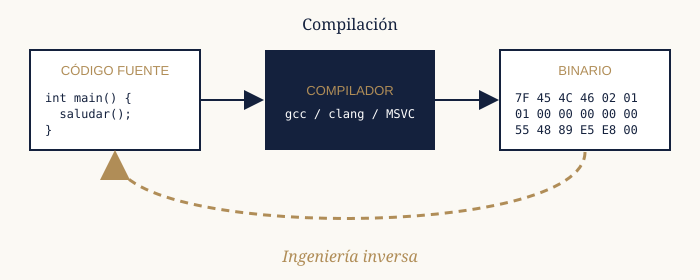

Bienvenido/a a mi cuaderno de bitácora. Aquí documento, semana a semana, cómo estoy aprendiendo a desmontar programas para entender qué hay dentro de ellos.
¿Qué es la ingeniería inversa?
La ingeniería inversa es el proceso de analizar un producto terminado para entender cómo funciona, sin tener acceso a su diseño original ni a su código fuente. En el software, esto suele consistir en tomar un programa compilado y estudiar su código máquina para descubrir qué hace y cómo lo hace.

La compilación convierte código legible en un binario. La ingeniería inversa intenta recorrer el camino de vuelta.
Cuando se compila un programa se pierde mucha información: los nombres de las variables, los comentarios y la estructura original del código. El trabajo del reverser consiste en reconstruir esa información a partir de las instrucciones que quedan en el binario.
¿Para qué sirve?
Aunque suene a película de hackers, la ingeniería inversa se utiliza a diario en muchos campos:
- Análisis de malware: entender qué hace un virus para poder detenerlo.
- Búsqueda de vulnerabilidades: encontrar fallos de seguridad antes que los atacantes.
- Interoperabilidad: hacer que un programa se comunique con un formato o protocolo sin documentar.
- Preservación: mantener vivo software antiguo cuyo código fuente se ha perdido.
- Competiciones: resolver retos en las competiciones CTF.
Por qué empecé este diario
Todo empezó con un reto de una competición CTF que no supe resolver. Me di cuenta de que no entendía qué pasaba por debajo de los programas que usaba todos los días, y decidí ponerle remedio.
Cada semana resuelvo pequeños retos ("crackmes") y apunto lo que he aprendido en el diario. Esta web también recoge mis notas sobre las herramientas que utilizo y las técnicas que más me han ayudado.
Mi ruta de aprendizaje
- Aprender lo básico de C y cómo se compilan los programas.
- Entender el ensamblador x86-64 y el funcionamiento de la pila.
- Practicar el análisis estático con un desensamblador.
- Practicar el análisis dinámico con un depurador.
- Resolver crackmes y retos de reversing en CTF.
- Analizar muestras de malware reales en un laboratorio aislado.
| Etapa | Estado | Duración aproximada |
|---|---|---|
| Lenguaje C | Completada | 6 semanas |
| Ensamblador x86-64 | Completada | 8 semanas |
| Análisis estático | En curso | 6 semanas |
| Análisis dinámico | En curso | 6 semanas |
| Crackmes y CTF | Pendiente | Sin fin |
| Malware | Pendiente | - |
| Tiempo dedicado hasta hoy | 26 semanas | |
Últimas entradas
Aspectos legales y éticos
Analiza únicamente software que sea tuyo o que tengas permiso para estudiar. Revisa siempre la licencia del programa y las leyes de tu país antes de aplicar ingeniería inversa.